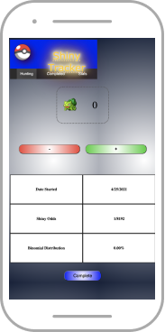

Shiny Tracker
In Semester 2 of the Software Development course at Keyin College, we were assigned a team to recreate/develop a web-based app using HTML, CSS and JS. Me and my teammate Nicholas created a Pokemon Shiny Tracker program to calculate the percentage of finding another Shiny Pokemon. This was one of the first web programs created in this course! Definitely a learning experience, and the programs only became more detailed and design-savvy as the semester went on!
